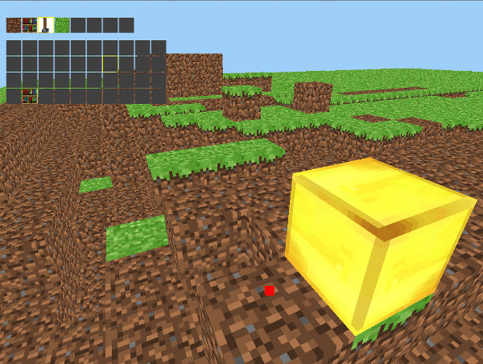
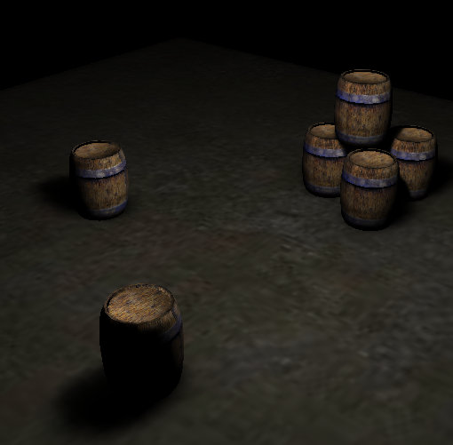
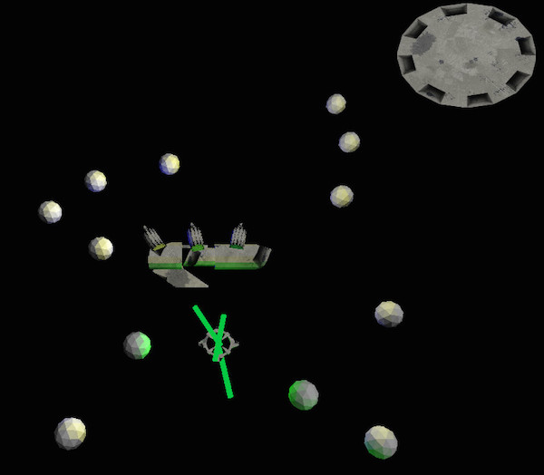
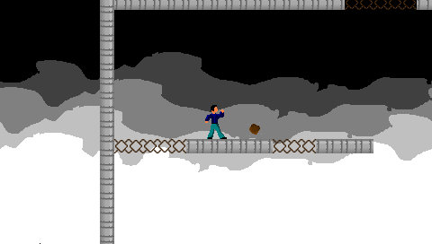
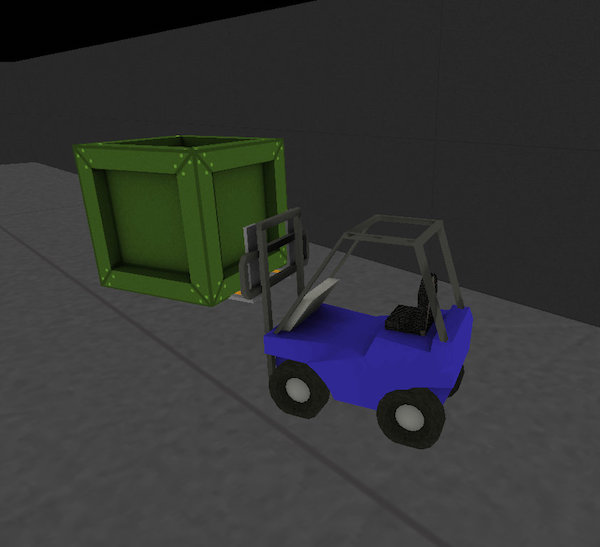
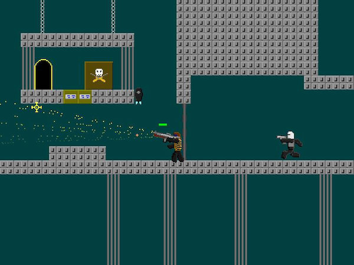
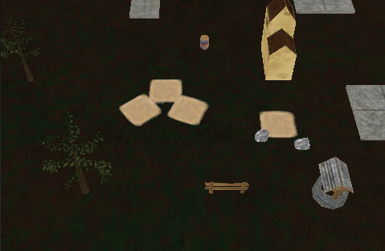

10/09/2015
I spent quite a bit of time experimenting with game technology when I was first learning how to program. I played with tons of ideas, many of which turned out to be no good, but I learned a ton about graphics and development in the process.

An extremely fast minecraft clone. Written in C and OpenGL.

I wrote my own lightmapper and UV unwrapper in Objective-C.

A small demo for a sci-fi adventure game engine. Written in C and OpenGL.
An adventure game in which players explore the ocean. One feature I like allows the player to take a picture and store it in an album. The game recognizes which fish are in the picture so it can reward them for collecting them all.

An action platform game where players avoid obstacles by jumping and running up walls.

A puzzle game I created for a school competition. Written in C++ and OpenGL.

A platform shooter game.

A prototype of a strategy game for iOS.